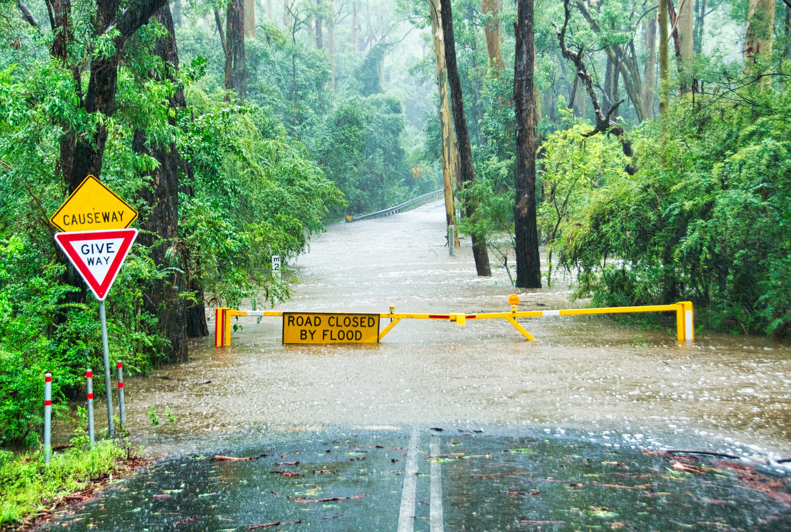

Major Disaster Events in Australia
by Aryan Chordia

|
 |

|

|

|
| Bushfire | Flood | Cyclone | Storm | Earthquake |
| Frequent during hot, dry summers, Australian bushfires are among the most destructive natural disasters, often devastating vast forests and communities. | Floods in Australia can result from heavy rainfall, cyclones, or river overflows, leading to significant damage to homes, infrastructure, and agriculture. | Cyclones, particularly in northern Australia, bring strong winds and heavy rains, causing widespread destruction and flooding. | Severe storms, including hailstorms and thunderstorms, can cause localized damage through high winds, lightning, and heavy rainfall. | While less common, earthquakes do occur in Australia, particularly in regions like South Australia and Victoria, sometimes causing structural damage. |
Impact on Gross State Product (GSP)
From 1990 to 2021, Australia averaged around 4-5 major disasters each year, while national Gross State Product (GSP) growth remained steady at approximately 3.1%. The weak positive correlation between disaster frequency and GSP growth (r ≈ 0.11) indicates little to no consistent relationship, meaning years with more disasters did not necessarily coincide with slower or faster economic performance. Despite major events such as the Black Saturday and Black Summer bushfires, the Australian economy showed strong resilience, with sectors like mining and construction often compensating for regional losses. Since the 2000s, disaster frequency has become more variable, but national growth has stayed stable, suggesting that while disasters cause short-term and local disruptions, they have limited long-term impact on Australia's overall economic trajectory. In some cases, recovery and reconstruction efforts may even stimulate temporary economic growth.
Data Sources
Disaster Data: Australian Disaster Resilience Knowledge Hub (https://knowledge.aidr.org.au/resources/data-sources/)
Economic Data: Australian Bureau of Statistics (https://www.abs.gov.au/statistics/economy/national-accounts/australian-national-accounts-state-accounts/latest-release#data-downloads)
Employment and Unemployment Data: Australia Bureau of Statistics (https://www.abs.gov.au/statistics/labour/employment-and-unemployment/labour-force-australia-detailed/latest-release#all-data-downloads)